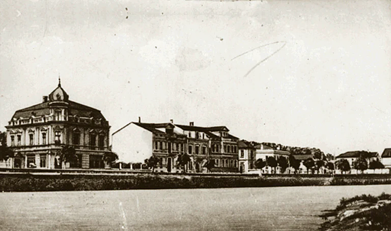
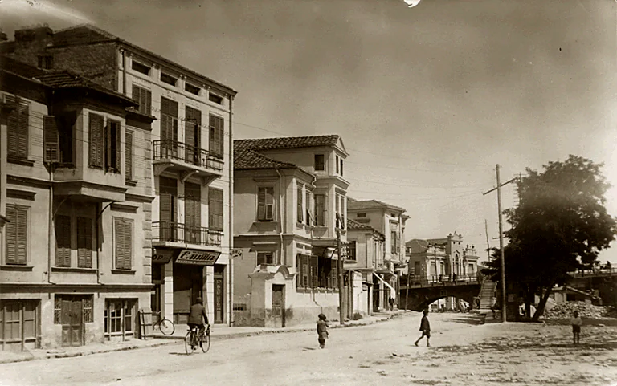

En el río Vardar
- Guion
- Dimitrie Osmanli, Simon Drakul
- Cámara
- Kiro Bilbilovski
- Año
- 1964
- Duración
- 00:16

El malecón «13 de Noviembre» - 1888.

Un molino en el curso alto del Vardar - finales del siglo XIX.

Aunque esta postal está muy dañada, se incluyó en la colección porque es de finales del siglo XIX y principios del XX, y en ella se ven edificios que solo aparecen aquí. A la derecha, el Banco Otomano. En primer plano, el viejo plátano del que se colgó el cadáver de Karpoš en 1689. Sobre él se alza la fortaleza de Skopie - Kale. A la izquierda del todo se ve parte del puente de piedra.

Vista de los dos malecones del Vardar - principios del siglo XX.

Skopie en 1902 - vista desde el puente de piedra hacia el puente de madera. El Vardar ya tiene muros de malecón. Se ven viviendas y edificios públicos. A la derecha de la foto, el teatro turco; a la izquierda, al principio, la mezquita Burmali. Al fondo, el edificio del banco y la antigua oficina de correos.

Vista hacia la pasarela de madera, el antiguo teatro turco y parte de la fortaleza de Skopie - Kale. (principios del siglo XX)

Vista desde la margen derecha del Vardar hacia la fortaleza de Skopie - Kale. (principios del siglo XX).

Vista de la margen izquierda del Vardar (malecón «Dimitar Vlahov») - principios del siglo XX. En el muro del malecón se ve la desembocadura del río Serava.

Puente de madera, antes de la construcción del puente de hierro. Al fondo, el puente de piedra y la mezquita Burmali. (finales del siglo XIX)

Principios del siglo XX. El Banco Otomano, la metrópolis de Skopie y los edificios de la margen izquierda del Vardar, justo pasado el puente de piedra. En primer plano, el viejo plátano.

Vista de la margen izquierda del Vardar hacia la iglesia de San Mina (con dos cúpulas) y la de la Santa Madre de Dios (al fondo, con una cúpula). - principios del siglo XX.

En primer plano, el edificio del tribunal y la antigua escuela; al fondo se ven las cúpulas de la iglesia de San Mina - principios del siglo XX.

Vista de los dos malecones del Vardar - principios del siglo XX.

La margen izquierda del Vardar - el malecón «Dimitar Vlahov» con el Banco Otomano, la metrópolis y las dos cúpulas de la iglesia de San Mina al fondo. (principios del siglo XX)

La margen izquierda del Vardar - el malecón «Dimitar Vlahov», entre el puente de piedra y el de hierro, con viviendas. (principios del siglo XX)

La foto se tomó desde el puente de piedra hacia 1910. A la izquierda se ve el antiguo teatro turco y, sobre él, la fortaleza de Skopie - Kale.

La margen izquierda del Vardar con el barrio judío y, al fondo, la fortaleza de Skopie - Kale. (1910)

La foto se tomó desde el puente de piedra hacia 1910. A la izquierda se ve el antiguo teatro turco y, sobre él, la fortaleza de Skopie - Kale.

Skopie en la inundación de 1916. El agua llegó a los edificios. A la derecha se ve cómo parte de un edificio se derrumbó por la crecida.

Skopie después de 1918. Los dos malecones del Vardar como ejes longitudinales importantes para el desarrollo urbano. Al fondo se ve el puente de piedra con la mezquita Burmali. Se aprecia la intensa construcción de edificios en el malecón, con formas arquitectónicas variadas, cercanas a la escuela europea.

Skopie antes de la guerra balcánica. El malecón de la margen derecha del Vardar. Al fondo se ven la mezquita Burmali y el puente de piedra. En primer plano, el consulado ruso y otros edificios. La arquitectura muestra la influencia de la escuela europea, con elementos de estilo clásico, académico y pseudoclásico.

Vista de la margen derecha del Vardar con los edificios del banco y la antigua oficina de correos, entre el puente de piedra y la pasarela de madera - principios de los años 1920.

Vista hacia la margen izquierda del Vardar. En primer plano, el tribunal y la antigua escuela; al fondo se ven las cúpulas de la iglesia de San Mina y, a su derecha, la de la Santa Madre de Dios. - años 1920.

Vista de la margen derecha del Vardar con los edificios del banco y la antigua oficina de correos, entre el puente de piedra y la pasarela de madera - principios de los años 1920.

La margen derecha del Vardar ante el puente de piedra. A la izquierda se ven el banco y la antigua oficina de correos. A la derecha de la postal, la pasarela de madera - hacia 1920.

Vista de la margen derecha del Vardar con los edificios del banco y la antigua oficina de correos, entre el puente de piedra y la pasarela de madera - principios de los años 1920.

Parte de la margen izquierda del Vardar - aproximadamente donde hoy está el edificio de la Radiotelevisión Macedonia. Se ve el alminar de la mezquita Vardar Tekke (construida a principios del siglo XVI) - principios de los años 1920.

Parte de la margen izquierda del Vardar - aproximadamente donde hoy está el edificio de la Radiotelevisión Macedonia. Se ve el alminar de la mezquita Vardar Tekke (construida a principios del siglo XVI) - principios de los años 1920.

Vista de la margen derecha del Vardar ante el puente de piedra. El espacio central del malecón. A la izquierda, los edificios del banco y de la antigua oficina de correos. A la derecha de la postal, la pasarela de madera - hacia 1920.

Skopie - parte de la plaza. A la izquierda se ve parte del puente de piedra y, a la derecha, el solar antes de construir el Banco Nacional. El malecón está hecho como calle de tráfico. Al fondo a la derecha, el instituto masculino.

Skopie - parte de la plaza. A la izquierda se ve parte del puente de piedra y, a la derecha, el solar antes de construir el Banco Nacional. El malecón está hecho como calle de tráfico. Al fondo a la derecha, el instituto masculino. - años 1930

El malecón «Dimitar Vlahov» - margen izquierda del Vardar. - principios de los años 1920

Vista desde el puente de piedra hacia el monumento a los combatientes caídos y el Banco Otomano. - años 1920.

Imagen panorámica de Skopie, en concreto del malecón izquierdo del Vardar con parte del barrio judío, el barrio de Pajko y el puente de piedra. - años 1920

Vista de Skopie desde el Casino de Oficiales hacia el barrio judío. - años 1920.

Vista de la margen derecha del Vardar con viviendas. Al fondo, el puente de piedra y la construcción del Casino de Oficiales. (hacia 1925)

Skopie, años 1930. Vista de los dos malecones. En primer plano, la antigua escuela y el tribunal y, justo detrás, los dos campanarios de la iglesia de San Mina. Al fondo, el Casino de Oficiales, antes de construirse el Banco Nacional. La foto se tomó desde el puente de hierro.

El malecón de la margen derecha del Vardar ante el puente de piedra. En primer plano, un edificio de viviendas con tiendas en la planta baja y entradas al pasaje «Aroesti», construido en los años 1920 como pequeño centro comercial con talleres y tiendas. (En el terremoto de 1963 murió aquí mucha gente.) Al fondo, el Banco Agrícola, el Casino de Oficiales, el Banco Nacional y el puente de piedra. (años 1930)

El malecón «13 de Noviembre» con viviendas, parte del puente de piedra y el Casino de Oficiales - años 1920.

Vista hacia el malecón «13 de Noviembre» en la margen derecha del Vardar, el puente de piedra y el Casino de Oficiales - fotografiado hacia 1927.

Parte de la plaza ante el puente de piedra y las dos márgenes del Vardar. A la izquierda, al fondo, se ven la iglesia de San Mina con sus dos cúpulas y, un poco más a la izquierda, la de la Santa Madre de Dios. El malecón está urbanizado, con alumbrado eléctrico y zonas verdes. (1925-1930)

La margen derecha del Vardar, desde la pasarela de madera hacia el parque - años 1930.

El malecón «13 de Noviembre». Vista hacia el puente de piedra y el Casino de Oficiales - finales de los años 1930.

El malecón de la margen izquierda del Vardar ante el puente de piedra, con viviendas del barrio judío. Al fondo se ve el Banco Otomano - hacia 1930.

Vista desde el puente de piedra sobre el Vardar hacia la pasarela de madera y ambas orillas. A la derecha, el Teatro Nacional; a la izquierda, el banco y la antigua oficina de correos. - años 1930

Vista del barrio «Bunjakovec». El cauce del Vardar está protegido con diques de tierra. - años 1930

Las márgenes izquierda y derecha del Vardar. Fotografiadas desde el puente de piedra. El espacio central del malecón a ambos lados del Vardar. - hacia 1930

La margen derecha del Vardar. Malecón «13 de Noviembre». - hacia 1930

Skopie, años 1930. Vista de los dos malecones desde el puente de hierro sobre el Vardar, con viviendas y edificios públicos. En primer plano a la derecha, la antigua escuela, el tribunal y los dos campanarios de San Mina. Al fondo, el Casino de Oficiales y el Banco Nacional.

Vista hacia el malecón «13 de Noviembre» en la margen derecha del Vardar, el puente de piedra y el Casino de Oficiales - fotografiado hacia 1930.

Vista de los dos malecones del Vardar y del puente de hierro. - años 1950

Vista de los dos malecones del Vardar y del puente de hormigón. - años 1950.

La margen derecha del Vardar pasado el puente de piedra, fotografiada antes del catastrófico terremoto del 26 de julio de 1963. Al fondo, el Casino de Oficiales y el Banco Nacional.

El malecón de la margen derecha del Vardar. Conjunto de oficinas y viviendas o «Torres del Vardar» (arquitecto Aleksandar Serafimovski). La foto es de los años 1960, antes del catastrófico terremoto del 26 de julio de 1963.

La margen derecha del Vardar con el puente de piedra, las torres junto al Vardar y el Gran Hotel «Skopie», fotografiada justo después del catastrófico terremoto del 26 de julio de 1963 y antes de la canalización del Vardar, realizada entre 1965 y 1968.

Vista hacia la margen derecha del Vardar. El arco en primer plano es parte del puente de piedra; la foto es de los años 1950.

Vista desde la margen izquierda del Vardar hacia el puente de piedra. Al fondo se ven las Torres del Vardar. - años 1970

Vista de la actual oficina central de correos - Centro de Telecomunicaciones (construido en 1974-1980, arquitecto Janko Konstantinov) y del malecón.

 Acueducto4 postales
Acueducto4 postales Kale30 postales
Kale30 postales Puentes60 postales
Puentes60 postales Malecón58 postales
Malecón58 postales Plaza46 postales
Plaza46 postales Edificios66 postales
Edificios66 postales Templos cristianos19 postales
Templos cristianos19 postales Edificios musulmanes33 postales
Edificios musulmanes33 postales Casino de Oficiales29 postales
Casino de Oficiales29 postales Teatro28 postales
Teatro28 postales Estación de ferrocarril13 postales
Estación de ferrocarril13 postales Escuelas36 postales
Escuelas36 postales Parques12 postales
Parques12 postales Mercados18 postales
Mercados18 postales Calles38 postales
Calles38 postales Panorama I60 postales
Panorama I60 postales Panorama II30 postales
Panorama II30 postales Collages55 postales
Collages55 postales Inundaciones9 postales
Inundaciones9 postales Terremoto27 postales
Terremoto27 postales Skopie 200026 postales
Skopie 200026 postales